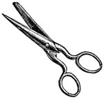
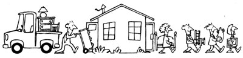

In the interest of promoting one of humankind's better ideas-barter-we announced in issue 37 our still-standing offer: Send us a short account of an actual barter (write to Successful Swaps, THE Mother Earth News, 105 Stoney Mountain Rd., Hendersonville, NC 28791), and if we print it in this column, you'll receive a year's subscription (new or extended) to MOTHER.
Likewise, if you now operate, or have ever operated, a home businesss that was inspired by an article you read in MOTHER, tell us about it in approximately 500 words (write to Bootstrap Businesses, THE Mother Earth News, 105 Stoney Mountain Rd., Hendersonville, NC 28791). Be sure to mention how you started your enterprise-including how much seed money you needed-the amount you make (net), and anything else that might be of assistance to other entrepreneurs. If your story is used in this column, you'll receive a free two-year subscription to MOTHER.
My wife and I had just settled into our new pastorate in rural Illinois and were celebrating the occasion with her favorite fried chicken recipe. With the first bite, though, I, half my front tooth sailed out of my mouth and came to rest somewhere near the gravy tray, leaving me with a broken stub and the thought of greeting my new congregation looking like a "Hee Haw" character. I quickly made the acquaintance of the town dentist.
As I sat having a temporary tooth affixed and discussing plans for the root canal work to come, I wondered where I'd ever get the money to pay him. Then I noticed his office walls were covered with wildlife prints, many of which reminded me of duck hunting in my native southwestern Ontario. Since I also love to paint ducks, the word "barter" came to mind. And after looking at some of my works, the dentist agreed to a swap. He got an original duck scene in oils, my new congregation got a fulltoothed sermon, and I got hooked on bartering and have kept at it ever since!
L.D.
West Virginia
Young homesteaders aren't the only ones who barter. At a meeting of our weekly senior citizens' group, I noticed one of the ladies in the sewing group was using a pair of scissors that were not only quite dull, but also loose in the pivot joint. Since sharpening tools is one of my specialties, I offered to take those scissors home and work on them for her.
When I returned them, sharp and tight, at the following week's gathering, I offered the same service to others there . . . and was quickly given more scissors in need of sharpening or minor repairs. I made it clear, though, that I wouldn't take money for this work. So instead the ladies paid me by making me scarves, mittens, and other homemade items. What started out as a friendly gesture turned into a terrific barter! And now one of those nice ladies has invited me to her house for a homecooked, meal ....
M.B.
California
Four years ago my wife and I moved from a one-bedroom town house in the city to a three-bedroom log home that we built ourselves. Because most of our money had been spent on the house and four acres, there wasn't much left for furnishing our new home.
We met a man in town who owns a furniture stripping and refinishing shop and fell in love with the antique oak pieces he had for sale-but the prices were out of our reach. Then we started going to local auctions and farm sales and found the kind of furniture we wanted, at affordable prices-but most of it was in need of repair and refinishing.
So I made a deal with the man at the strip shop: I'd work for him if he would strip our furniture and teach me how to repair and refinish antiques.
Meanwhile, we kept on buying bargain pieces . . . and before long we had more than enough rejuvenated furniture to fill up our home. That's when we started selling our surplus refinishing projects at antique flea markets. When people saw my work, they started bringing me their furniture to be refinished. I had so much work that my wife learned the craft and began helping me. Business kept increasing until we formed our own company, Cabin Hill Antiques.
Our initial investment was $400. We now own a retail shop on "antique row," which we sublease to dealers, and a furniture repair shop. My wife quit her job as a nurse and runs the shop full time. This past year we grossed $26,000, all of it from our bootstrap business!
J.B.
Maryland
When my family moved to Kentucky two summers ago; we planned on being able to sell produce from our newly acquired farm to help make ends meet. But we soon discovered that produce is difficult to sell in this part of the state because of the many avid gardeners and farmers who grow their own.
The article on page 106 of MOTHER NO. 69, "Summer Campground Produce Peddlers," showed me that there's more than one way to sell a tomato. After checking with many of the local gardeners, I found out that they, too, wanted to market their surplus produce but were having difficulty doing so in our "land of plenty." Taking my cue from MOTHER, I began to set up a produce exporting business, buying locally grown vegetables wholesale and trucking them to the nearest area of demand to resell at retail prices.
Fortunately, since I already owned a one-ton truck, my start-up costs were quite low: My initial expenses were limited to $32 for an ad in the local paper, $15 for gas, and approximately $125 for the first load of produce that I bought from the local farmers.
Within a week I had made my first produce run and was busy arranging to buy more vegetables. And after only a month, my little enterprise showed a profit of $630!
My family and I have been able to expand to two trucks since our first summer, and we may take on transporting and selling other local products, such as firewood, in the near future. Thanks, MOTHER, for showing us how to get started in our own produce exporting business.
J.T.
Kentucky
I needed a waterline put in through some 400 feet of almost solid rock that ran between our solar homestead and a nearby creek. My neighbor had a barbed wire fence that needed rebuilding. So we swapped jobs: Using his backhoe, he had my waterline in and covered in two days. And with the help of "Putting Up a Barbed Wire Fence" in MOTHER NO. 86, I rebuilt a sturdy fence for him in practically no time. To say that we were both pleased with the barter would be an understatement.
C.H.
Oklahoma
|
 |
 |
|